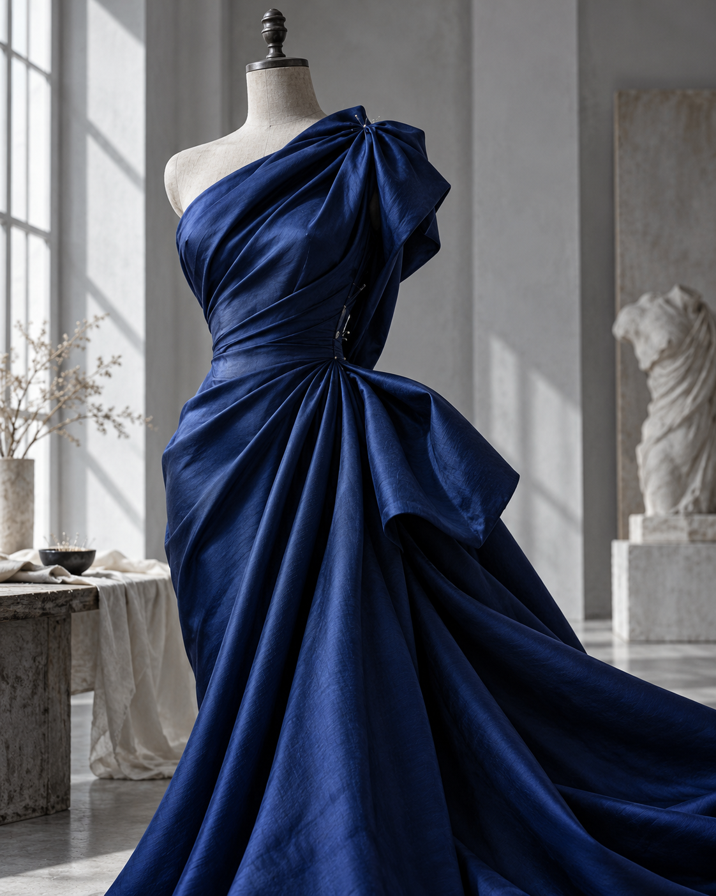

Силуэт
Свобода, чёткость или мягкость. Сначала выбираем характер будущей вещи.
Ателье-шоурум женской одежды · Москва
Одежда начинается не с размера.
Она начинается с вас.

Сначала человек. Потом лекало.
Индивидуальный пошив — возможность начать с того, как вы хотите чувствовать себя в одежде. С привычного движения, любимой линии, особого повода.
Свобода, чёткость или мягкость. Сначала выбираем характер будущей вещи.
Ткань меняет всё: как ложится складка, как движется и ощущается одежда.
Воротник, линия рукава, длина. Именно нюансы делают вещь вашей.
Небольшая творческая примерка
Поиграйте с силуэтом и цветом.
Сохраните идею для разговора с ателье.
Маленькая игра в большое ремесло
Соедините восемь точек,
чтобы создать силуэт платья.
Первый стежок покажем вместе.
Начните игру — появится первый стежок.
0 / 8Нажимайте на точки или используйте кнопку. Перетаскивать ничего не нужно.
В ателье любая вещь начинается с линии. Здесь вы можете пройти этот маленький путь сами.
С клавиатурой: Tab выбирает кнопку, Enter или пробел делает стежок.
Восемь точек стали одной вещью. Теперь выберите для неё цвет в эскизе.
К своему эскизуВсё начинается с разговора
Выберите запись в ателье или обратный звонок. В этой демоверсии можно попробовать форму без отправки данных.
+7 917 104-44-24Демо: данные никуда не отправляются.
Данные очищены. Для встречи свяжитесь с ателье напрямую.